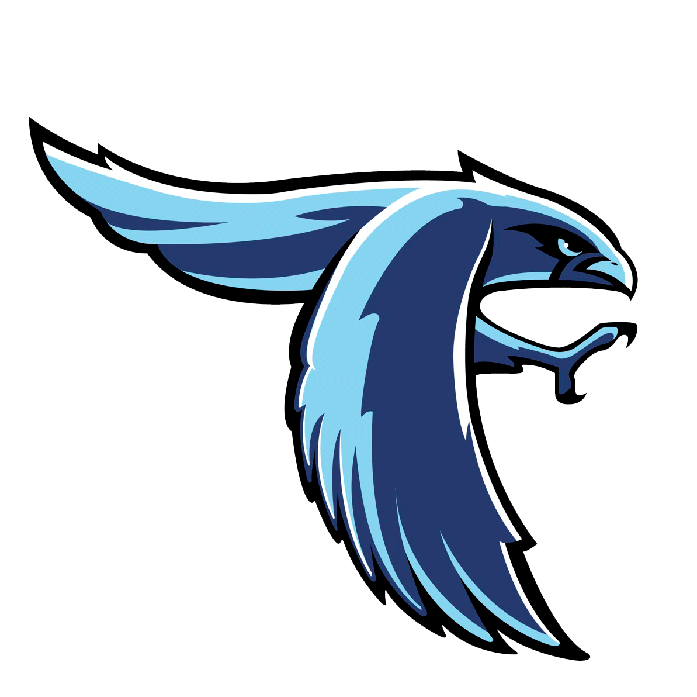
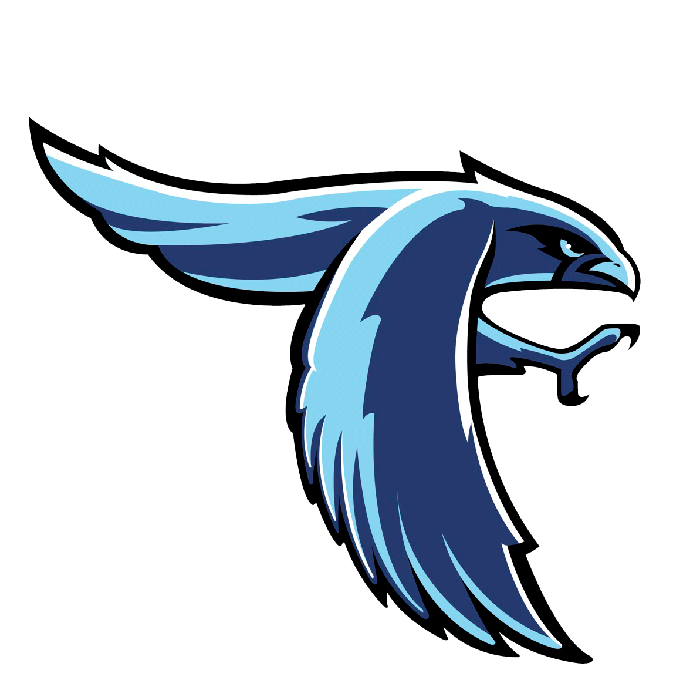

About Me
About Me
Hi, My name is Tj Chapell. This is my personal portfolio website that I created in the Nextech Catapult program. I go to Perry Meridian High School and I am becoming a senior. Some hobbies I have are coding, gaming, running, and video recording/editing.
 


My Journey In coding
I got into coding because as a kid I always had access to the internet and video game consoles. And as all kids, I had that urge to develop a video game and thats what I was set on doing every since my childhood. I didn't really learn to code, properly that is, until 9th grade when I took my Intro to CS course. Ever since then I wanted to expand my knowledge so I took the next 2 courses in my school CS1 and AP CSA. Through all 3 of these classes I've learnt HTML, CSS, Javascript, Python and Java.
How I got into Nextech
During my 11th grade year in highschool I learned what Nextech was through my friend, Alexander Jacobs (AJ) who was a previous catapult. He also went into my computer science classroom and explained what Nextech was and showed us his portfolio. After hearing about all of this, I told my friends and we all applied hoping we would make it here.